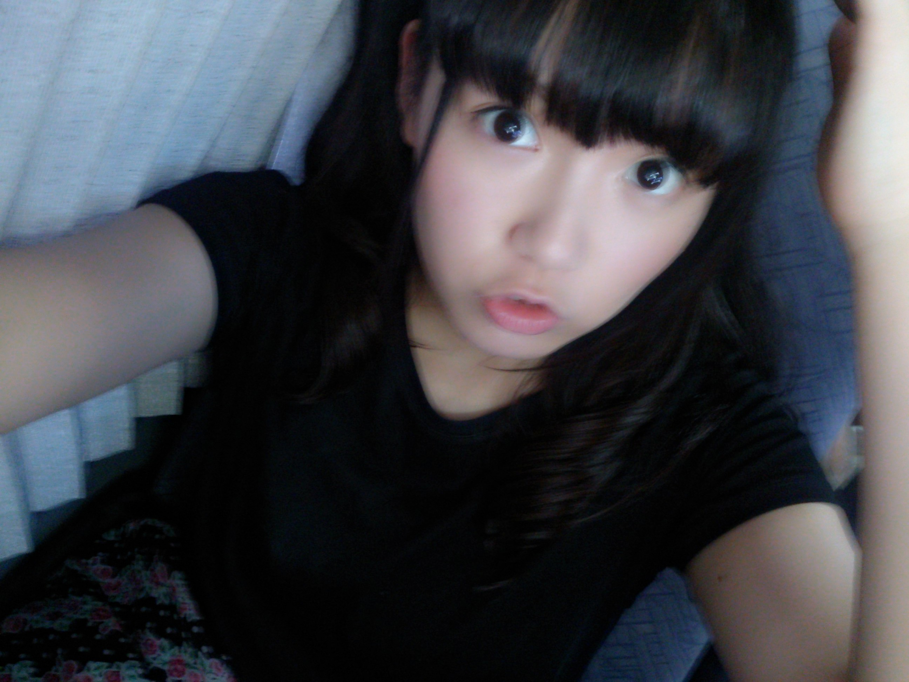
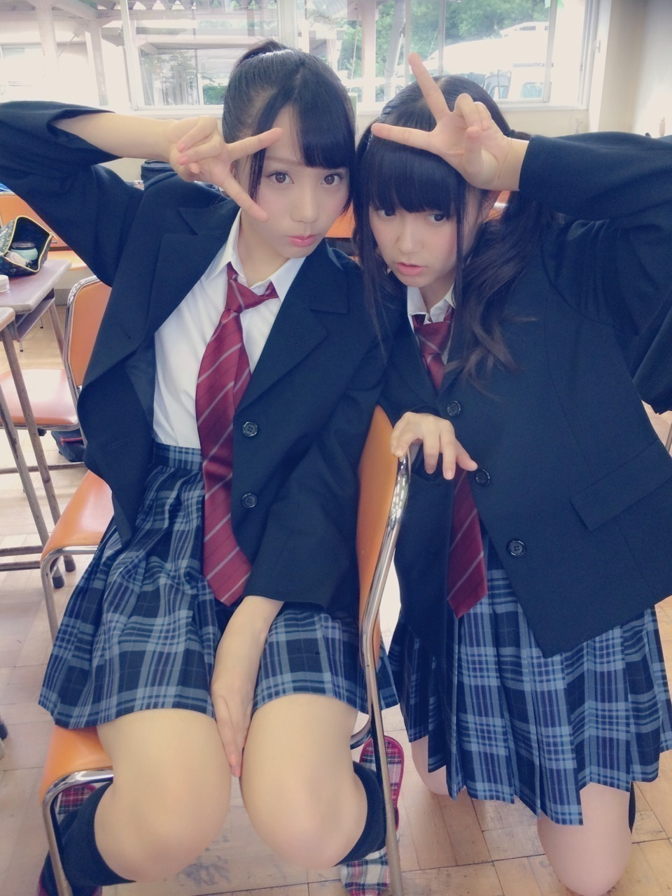
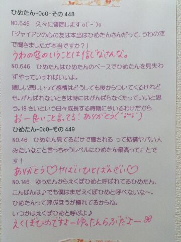

| 2014/09 12 Fri | ひめたん-OoO-その478 |
3人の卒業・活動辞退が発表されました。
まだ活動期間があるから
今からしみじみと語るのも
なんか違うかな～と思うのですが
今はとにかく寂しい気持ち(´；_；｀)
りしゃこと京ちゃんは
学業が忙しいとのことで
両立するの辛かったろうによく頑張ったね(´；_；｀)
乃木坂を選んで入ってくれて
短い間だったけど一緒に活動できて
楽しい時間を過ごせてよかったよ\❁/
10月の最後の握手会が終わるまで
乃木坂を全うしてほしいな
最後までよろしくね！
寧々は、最後はアンダーライブで締めたいって
言ってくれたことが嬉しかった。
「10thアンダーや研究生に申し訳ない」とか
ブログに書いてあったけど
むしろ寧々がいなきゃだめだよ(>_<)
みんなで最高のライブにしたい！
お別れの言葉はそのあとでもいいよね！
決断するのって難しいことだよね～
3人とも覚悟して自分の道を選んで
本当に偉いなって尊敬しちゃう
寂しくて引き留めたい気持ちと
夢を叶えて欲しいって気持ちと
どっちもあるんだよね。

さて、のぎ天更新されました！
アンダーライブ成功を祈願して
お寺で修行してきた( ˙Ο˙ )
みんなもう観てくれたかな？
「日進月歩」って書いて燃やしたよー
漠然とした目標のような気がしなくもないけど
でも今の自分には一番大切なことかなって。
お掃除はもうあれだよね、
「中元チーム」って時点で
なんか楽しそうだもんね。
いや真面目に頑張りました......

「何度目の青空か？」MV公開されました
今回はアンダーメンバーも
MV参加させていただきました☆
こんな学校あったらいいよね～
独特の世界観を楽しんでもらえると思います
ひめたんはついんてーるしてるよー

女子高生っぽいポーズ、のつもり
明日の開運音楽堂に出演するって
めーるで言っちゃったけど
来週だった＼(^o^)／
最後に、前回予告した
ひめたんからみんなに質問するコーナー
5月ぶりだよ確か(゜ω゜)
 ひめたんのこと好き？
ひめたんとオムライス どっちが好き？
○○の秋といえば？
ひめたんのこと好き？
ひめたんとオムライス どっちが好き？
○○の秋といえば？
あの、このコーナー見たことないひとのために
ひとことだけ言わせてね
1問目は毎回お決まりなの(っ´ω`c)♡
この質問の答えいつも楽しみにしてるんだからね～
あ、大喜利とか別に期待してないからね～

 息子(7歳)が「ひめたんは空とべるよ！
息子(7歳)が「ひめたんは空とべるよ！
ビームでるからとぶんだよ！」と言ってました。
ちょっと飛んでもらっていいですか？
ななさいの夢は崩せんな( ˙Ο˙ )
7thの個人PVで空飛んでるんだよ！
空中にいるのは5分くらいだけど でも飛んでるよー
びーむとは関連ないかも......んーん何も言ってない。
私、お医者さんをしているのですが
病院でひめたんビームをはやらそうと
入院患者さんやナースの前でひめたんビームを
やっているのですがかなり失笑されます
このまま続けていいのでしょうか？
小さい子にはうけはいいのですが...
ひめたんもメンバーから失笑されるから
ある種 間違いではない......けど
やはり心のキレイなひとにしかびーむ効かない説は
有力みたいね:(´◦ω◦｀):
ひめたーん！
さゆりんの二の腕食べるのにはどーすればいいのー？
なぬ(゜ω゜)
だめだよさゆりんごのにのうでも
ひめたんが守るよ
ひめたんがバスケのゴールに突っ込んだ
やつが最近流行の壁ドンってやつですか？
確かにあれは結構がちな壁ドンだったけど
なんかやだー！！！
てゆか故意でできるもんじゃないし
何より痛いので真似はしないでいただきたい
お、ひめたんにしては珍しく説得力がある解答。
きゅんきゅん王国に
いちご農家さんはいますか？
ぜひやりたい♡
あらかわいい。
今いないと思うよ～どうぞ～＊
美味しいのを頼んだぞ( ^O^ )
ひめたんの変顔を見てみたいのですが、
どうそればいいですか？？♡
あらかわいい。ん？
上唇の薄いひめたんと
ちゅ～♡したい
ダメかな？かな？？
ここに集う乃木坂ファミリーのみんなや
きゅんきゅん王国のみんなに聞いてごらん( ^ω^ )

ひめたんの日記の
コメント欄下２ケタに46を踏んだ方へ
手書きでコメ返するコーナー
＼ ひめたん46 ／



いつもたくさんのコメント
ありがとうございます
いつもはひめたんが質問に答えるけど
今日は逆の立場だからね！
質問返すの意外と大変なんだからね～楽しいよ～
ちなみにオムライスのチョイスに
深い意味はないです(〃ω〃)
明日は今度こそ京都個握！
握手会久々だよね～楽しみにしてたのよ～
1部に参加してくれるみんなは
お寝坊しちゃだめだからねー♪
お留守番ちーむのみんなは
次の日記でレポするから待っててね
あ！乃木のの聴いてねーきっと楽しい回だよー
(＊´・ω・＊)
コメント(851)
2014/09/12 23:42